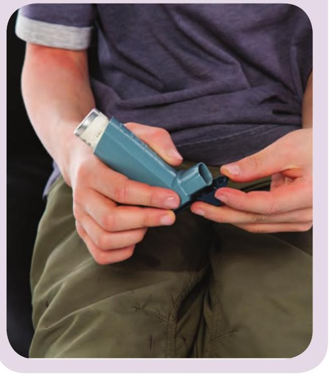
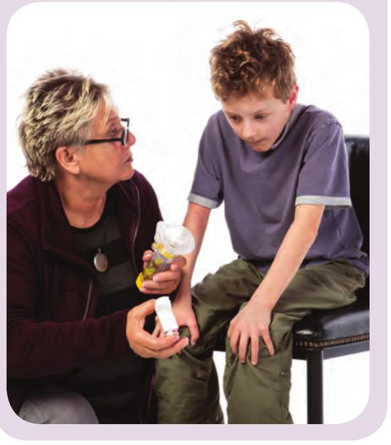
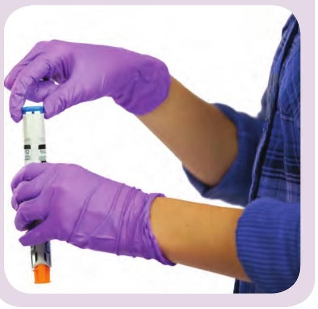
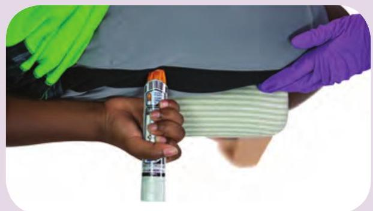

7 Breathing Emergencies
Asthma
Many people have asthma, a condition that can make breathing difficult. Asthma is normally triggered by something, such as dust, stress, or exercise.
What to Look For
- Trouble breathing (gasping for air, wheezing or coughing, or rapid, shallow breathing)
- Inability to say more than a few words without pausing to breathe
- Tightness in the chest
Call
Call EMS/9-1-1 and get an AED if the person is struggling to breathe or does not improve after taking his or her medication.
Care
- If you think that something in the environment is triggering the attack, move the person away from the trigger.
- Help the person to take his or her quick-relief asthma medication.
Using an Inhaler
Using an Inhaler
- Shake the inhaler and remove the cap. 
- Breathe out, and then close your mouth around the mouthpiece.
- Press the top of the inhaler while taking one slow, full breath.
- Hold the breath for as long as is comfortable.
Using an Inhaler With a Spacer
- Shake the inhaler and remove the cap. 
- Put the inhaler into the spacer.
- Bring the spacer to your mouth and press the top of the inhaler.
- Take slow, deep breaths, holding each breath for several seconds.
Anaphylaxis
Anaphylaxis is a severe allergic reaction that can be life-threatening.
What to Look For
A person with signs and symptoms from two or more of these categories—especially after contact with a possible allergen—should be treated for anaphylaxis:
- Skin (e.g., rash, swelling)
- Breathing (e.g., high-pitched noises)
- Alertness (e.g., dizziness)
- Stomach (e.g., vomiting)
Call
Call EMS/9-1-1 and get an AED.
Care
If the person has an epinephrine auto-injector, help him or her to use it:
- Remove the safety cap. 
- Firmly push the tip of the epinephrine auto-injector against the outer thigh. A click should be heard. Hold in place as directed, usually for 5 to 10 seconds. 
- Rub the injection site for 30 seconds.
- If the person's condition does not improve within 5 minutes, repeat the dose.
- Have the person rest quietly until EMS personnel arrive.